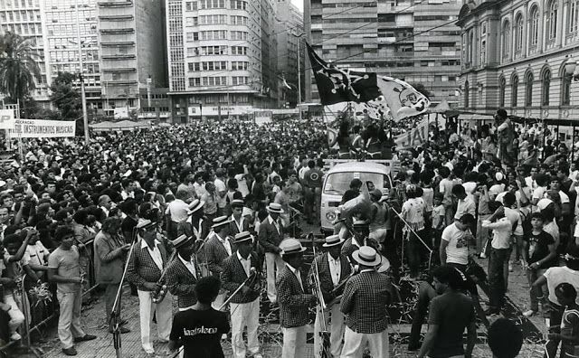
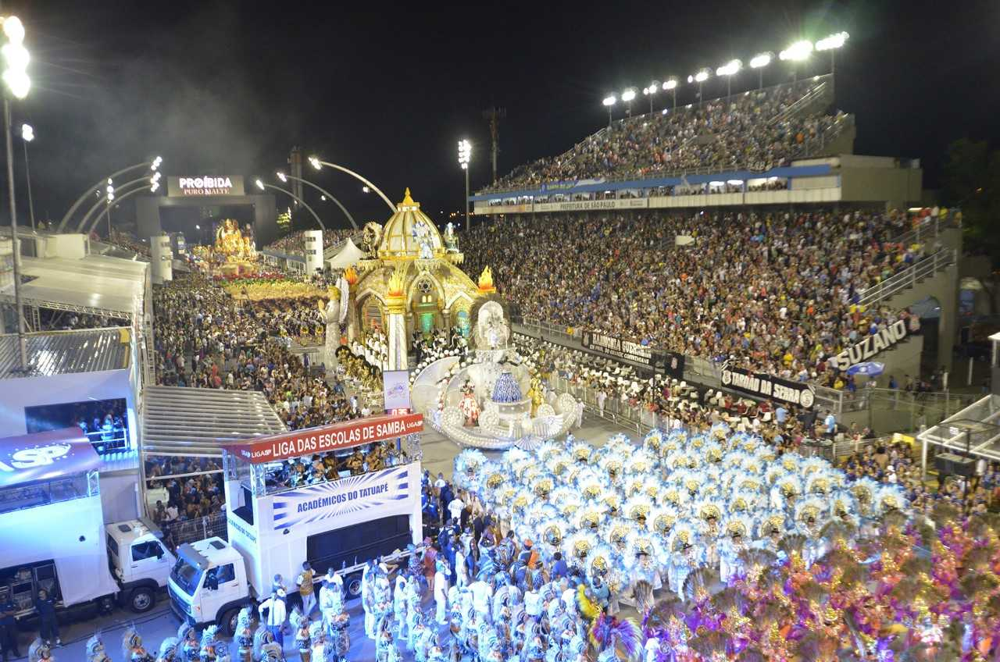
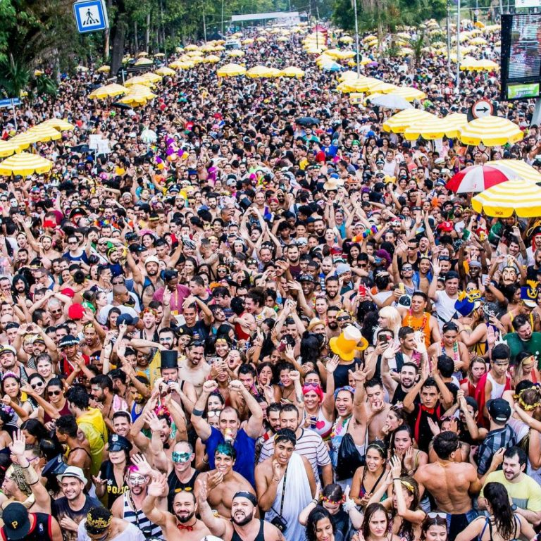

Ao lado do Rio de Janeiro e de Salvador, a capital paulista mobiliza milhões de foliões todos os anos, seja nos blocos de rua, nos bailes dos clubes ou nos badalados desfiles das escolas de samba no sambódromo do Anhembi.
Como a maioria dos outros carnavais, o Carnaval em São Paulo tem raízes afro-brasileiras. Ao longo dos anos, as fantasias e os enredos apresentados por várias escolas têm inovado pela sua criatividade, dando um espírito competitivo nos torcedores, ao mesmo tempo, dando ao público uma oportunidade de apreciar um grandioso espetáculo. É composto pelo desfile das escolas de samba, bailes em clubes e blocos de rua. Atualmente, é considerado um dos maiores e mais importantes eventos populares do Brasil.
Região: Sudeste Cidade de São Paulo - São Paulo Ritmos Predominantes: Samba e Marcha-sambada
História
Os registros históricos dão conta de que o Carnaval de São Paulo teve origem no ano de 1604, quando ainda era chamado de “entrudo”.
O carnaval paulistano nasceu em meio às festas religiosas, quando após os ofícios de fé, os membros das irmandades juntavam-se em frente à igreja para uma dança animada ao som de tambores.
Embora tenha sido trazido pelos portugueses, é impossível fechar os olhos para suas raízes africanas, presentes até hoje nos desfiles das escolas de samba e nos blocos de rua.
A formação do carnaval popular paulistano tem como base fundamental as festas de caráter religioso-profano das pequenas cidades interioranas nas quais a população pobre manifestava-se por meio de suas danças e músicas, que acabaram tornando-se parte indissociável dos festejos, como na festa de Bom Jesus de Pirapora. Os primeiros líderes de grupos carnavalescos paulistanos, em sua maioria provindos do interior do estado, ao frequentarem estas festas, absorviam elementos musicais e coreográficos que seriam manifestados no carnaval popular paulistano. Assim, a influência dos sambas rurais presentes na festa de Pirapora refletir-se-ia na música dos cordões carnavalescos paulistanos, que por sua vez influenciariam as futuras escolas de samba da capital bandeirante, atualmente as principais agremiações carnavalescas de São Paulo.
Grupo Carnavalesco Barra Funda teria sido a primeira agremiação a ser criada em 1914.
Até então, a folia acontecia de forma desordenada pelas ruas da capital paulista e era dividida entre a festa do burguês branco e o cordão popular dos negros.
Com o passar do tempo, a organização foi mudando e começaram a surgir as primeiras escolas de samba na década de 1930.

Agora, o Carnaval em São Paulo começou a virar um negócio mesmo somente a partir de 1960, quando surgiram os primeiros investimentos por parte da prefeitura, que via na festa uma maneira de promover a cidade.
O primeiro palco da folia foi na Avenida São João, depois passou para a Avenida Tiradentes para, anos mais tarde, em 1977, migrar em definitivo para o Sambódromo do Anhembi.
Samba Paulista
O gênero surgiu em São Paulo, em meados da década de 1910, nas festas das colheitas de café, assumindo uma tradição rural negra, carregada dos batuques afro-brasileiros, além do sotaque caipira e um ritmo mais marcado.
Além disso, a alcunha de cidade cosmopolita e fruto do progresso restringiu os espaços informais como reduto do samba, ao contrário do Rio de Janeiro, onde o samba é o símbolo-mor. A valorização do “samba rural” seria uma tentativa de mostrar ao mundo outras facetas da cidade de São Paulo. Relembrando o samba marcadamente negro, rural e popular, os defensores do samba paulista vão na contramão da exaltação do progresso da cidade.
Marcha-Sambada
Os elementos musicais característicos eram a batucada, responsável pela manutenção do ritmo do desfile por meio da execução de instrumentos de percussão e sopro, com destaque para o bumbo, e o chamado choro, grupo responsável pelo acompanhamento melódico e harmônico, com instrumentos de corda, cavaquinho e violão, e também de sopro, como trompete, trombone e saxofone. O ritmo interpretado pelos cordões era a chamada marcha-sambada, que mesclava elementos dos sambas rurais paulistas e da marcha.
Como se Comemora o Carnaval em São Paulo
A celebração do Carnaval em São Paulo não é muito diferente de como acontece no restante do país.
Blocos de rua, bailes em clubes e o imponente desfile das escolas de samba são algumas das maneiras que os foliões encontram para comemorar a data.
Centenas de milhares de visitantes vão para o Carnaval em São Paulo todos os anos, não apenas para a festa, mas também para experimentar a verdadeira cultura afro-brasileira. Desde 1991, o Sambódromo do Anhembi é o foco das comemorações do Carnaval em São Paulo. O desfile apresenta as melhores escolas de samba da cidade, incluindo Gaviões da Fiel, Vai-Vai, Camisa Verde e Branco, Unidos do Peruche e outras. A competição inclui dois grupos de afoxé com fortes raízes afro-brasileiras. Os moradores locais estão ativamente envolvidos na criação de fantasias e carros alegóricos das escolas de samba e desfiles de rua que são realizados por toda a cidade.

Os desfiles acontecem em quatro dias seguidos, normalmente, começando na sexta-feira, com a primeira metade das escolas do grupo de elite, e terminando na segunda-feira, com as agremiações das divisões inferiores.
As escolas são avaliadas em diferentes quesitos para definir a classificação geral e determinar as campeãs e aquelas que vão ser rebaixadas.
Atrações clássicas do Carnaval em São Paulo
a tradição do Carnaval em São Paulo é antiga e há algumas atrações clássicas que nunca saem de moda.
Confira as datas das próximas Terças-feiras de Carnaval:
Rodas de samba mais intimistas, como as dos bares da Brahma, do Samba, Ó do Borogodó e Terra da Garoa
Bloquinhos de ruas tradicionais como Vai Quem Qué, Vou de Táxi, Domingo Ela Não Vai e Tarado Ni Você
Ensaios técnicos das escolas de samba, como o da atual campeã Águia de Ouro
Desfiles das escolas de samba no Sambódromo do Anhembi em um dos camarotes ou na arquibancada mesmo
Baladas e bailes em casas noturnas e clubes, como o Círculo Militar e o Jockey Club.

Saiba mais sobre o Carnaval das outras cidades do Brasil!